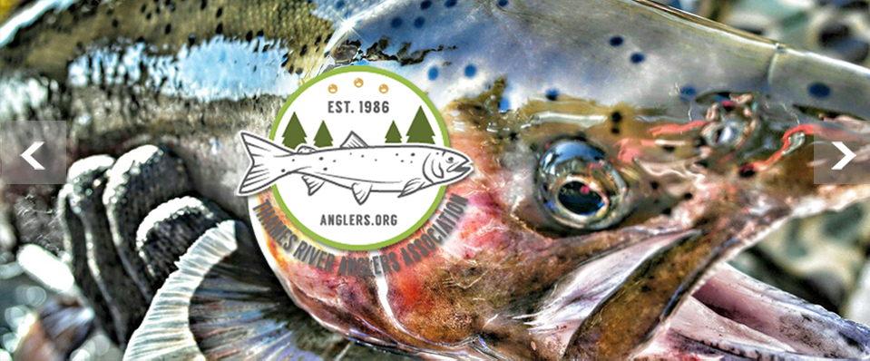

Hero Image
Welcome to the TRAA
Dedication Today for Tomorrow The TRAA stands to enhancement, protection and promotion of a viable, multi-species fishery within the Thames River watershed.
TRAA General Meeting
Why not start coming out to TRAA General Meetings. That way you're up on the latest details on TRAA news, plans and events. As always, guests are always welcome. We meet at the Western Ontario Fish & Game Protective Association clubhouse at 790 Southdale Road, London Ontario. If you're not a member feel free to drop in and check out what the TRAA is all about.
Membership and Funding
Memberships
Become a TRAA member for a year for only $25.00 your membership adds another voice to our effots in protecting and enhancing aquatic habitats in the London & area community.
Fundrasing
Efforts are underway to gain contributions to contuine many of the TRAA's most vital projects.
LEARN MORETrout Hatcherey
Trout Hatchery
The TRAA trout hatchery is a popular activity of the TRAA as it's a great teaching tool with regard to the life cycle of a trout. Those involved with the hatchery get to see firsthand the development stages of the egg and the fry before their final release destinations to area streams. Volunteers attend to the operation every day to maintain the health and well-being of the trout. As the saying goes, many hands make light work. There are ideally 2 members assigned for each day of the week. This is desirable as they can cover for each other and also allows us to match up anyone wanting to "learn the ropes" with an experienced mentor. If you are wanting to be a part of the trout hatchery rotation. You can contact us via this website or attend a TRAA General Meeting.
Current Events

Rod Building - Your First Time
7:00PM - Mondays, February 18 through March 11, 2019
This will be a series of informal, hands-on sessions that will result in a spinning or fly rod that you have assembled and finished yourself. This opportunity is open only to current members of the TRAA, WOFGPA and/or FCFFC. Registration will be closed when 15 paid-up participants have registered, or January 11, 2019, whichever comes first. Presented by: Thames River Anglers Association with the Western Ontario Fish & Game Protective Ass’n and the Forest City Fly Fishing Club. Located at: The Western Ontario Fish & Game Protective Association clubhouse is at 790 Southdale Road, London Ontario.
Stream Habitat Work Party
Took place on Saturday, October 13, 2018
A few TRAA members cleared a number of fallen trees and other blockages on October 13th. Dan Shinkelshoek made a video of the proceedings and it's worth a look so click on the picture to view. If you have further questions about TRAA stream habitat projects and events, please come out to the TRAA General Meeting. Click on the picture to see a YouTube highlight video.